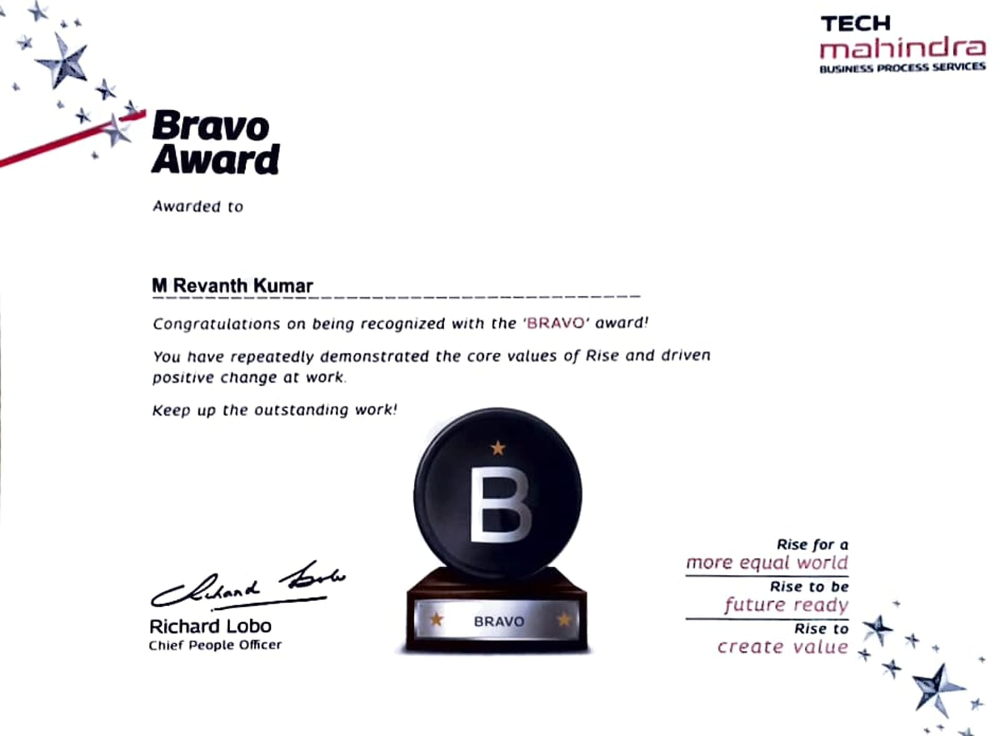
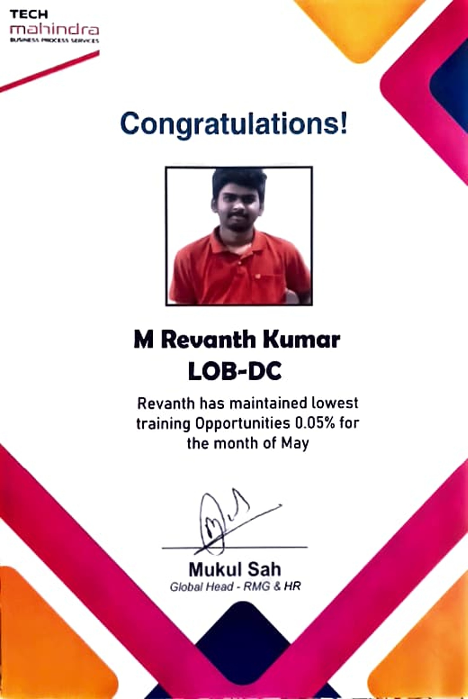
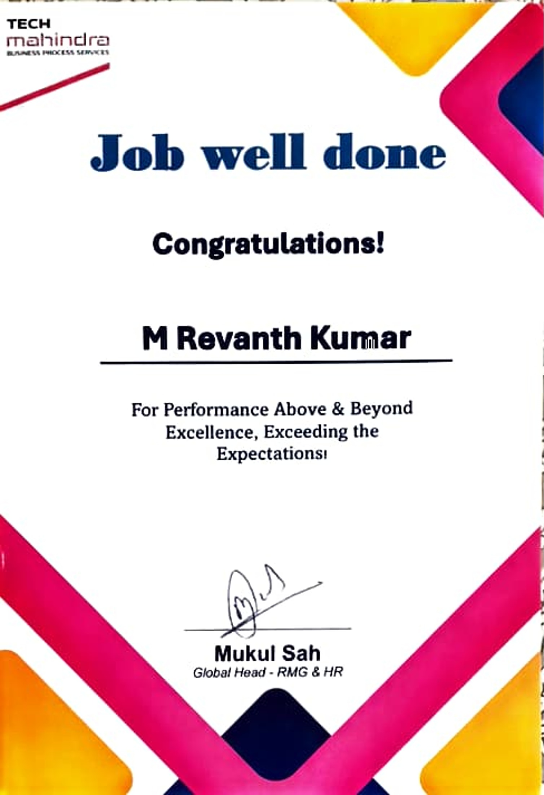
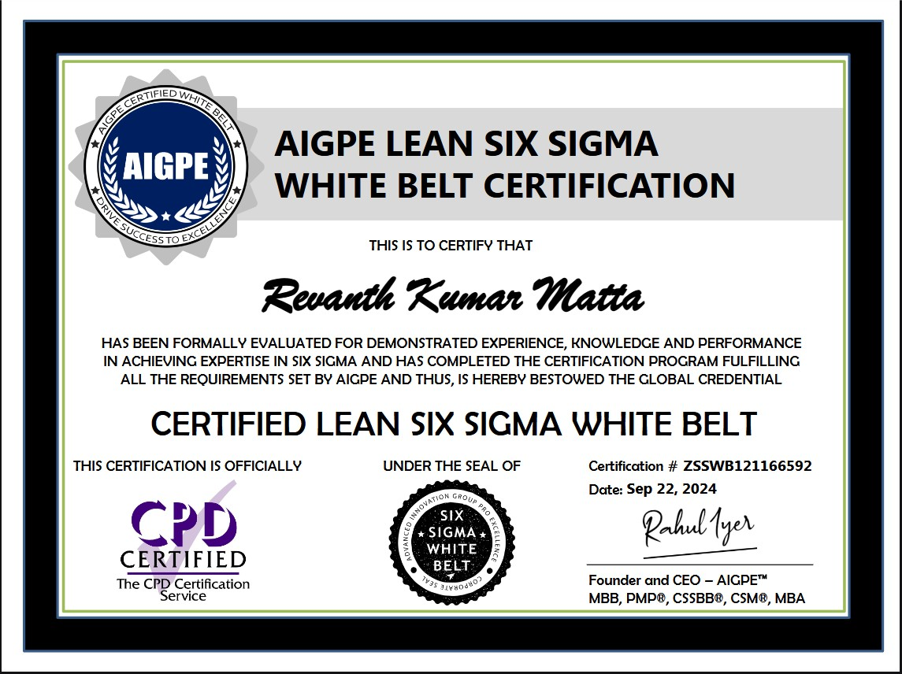

Core Domains
- Medical Records Retrieval
- Eligibility Verification
- Claims Adjudication
- Invoice Processing
- HIM Documentation Standards
Hello, I’m
I specialize in Medical Records Retrieval, eligibility verification, claims adjudication, HIPAA-compliant documentation, quality auditing, and root cause analysis. I help teams improve accuracy, compliance, and operational performance.

Skills
About
I am a Healthcare Operations Specialist with more than six years of experience in US healthcare non-voice processes, including Medical Records Retrieval, eligibility verification, enrollment processing, claims adjudication, and invoice processing.
My work centers on HIPAA-compliant handling of protected health information, HIM documentation standards, quality audits, escalation handling, and structured root cause analysis.
I have consistently sustained 95%+ audit compliance and error rates below 5%, while supporting teammates through mentoring, audit checklists, and process improvements.
Lean Six Sigma White Belt — AIGPE
Resume
Healthcare Operations Specialist with 6+ years of non-voice experience across medical records retrieval, eligibility verification, claims adjudication, and invoice processing in US healthcare.
Skilled in HIPAA compliance, HIM documentation standards, and quality auditing, with a consistent record of sustaining 95%+ audit compliance and error rates below 5%. Recognized with multiple awards for quality delivery, process optimization, and team mentoring.
Experience
Tech Mahindra
24-7 Intouch India Private Ltd
Artech Infosystems Pvt. Ltd
Hinduja Global Solutions
Achievements & Certification

Tech Mahindra
Recognized for consistently achieving 95%+ audit compliance and maintaining high-quality delivery standards.

Tech Mahindra
Received for sustained quality delivery, process adherence, and strong performance in healthcare operations.

Tech Mahindra · 2023
Awarded for excellence in medical records handling and high-quality service delivery.

Tech Mahindra · 2024
Recognized for mentoring associates and improving audit accuracy by 20%.
Hinduja Global Solutions · 2019
Earned for surpassing production and quality benchmarks.

AIGPE
Certified in Lean Six Sigma fundamentals, process improvement, waste reduction, and quality-focused problem solving.
Education
Indian Institute of Management & Commerce, Hyderabad
Nrupatunga Junior College, Hyderabad
A.K.V. High School, Hyderabad
Projects & Process Improvements

Problem: Ensure HIPAA-compliant PHI disclosure across medical records requests.
Approach: Standardized requester verification, SOP checklists, and escalation handling.
Outcome: Sustained 95%+ audit compliance and maintained error rates below 5%.

Problem: Reduce delays and denial risk during eligibility and claims processing.
Approach: Strengthened pre-submission validation checks before portal upload.
Outcome: Improved processing accuracy and reduced delays and denial rates.

Problem: Ensure accurate verification and routing of bulk-uploaded invoice documents.
Approach: Matched vendor and client information against invoice details using SOP-based checks.
Outcome: Earned Star Performer recognition for exceeding production and quality metrics.

Problem: Identify and reduce recurring audit errors.
Approach: Analyzed error patterns, identified process gaps, and supported corrective actions through coaching and checklists.
Outcome: Improved accuracy by 20%.
Contact
I’m open to healthcare operations, quality assurance, claims, MRR, eligibility, and process-excellence opportunities.